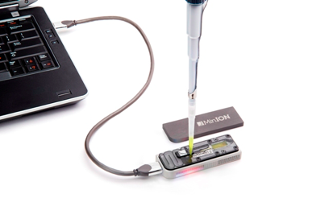
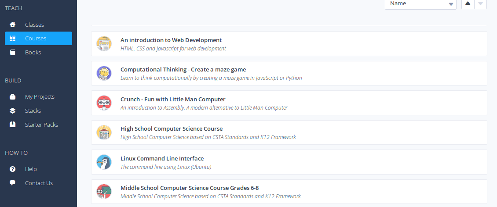

Principles and Applications of Modern DNA Sequencing
EEEB GU4055
Session 1: Introduction to computational genomics


Class format. In each class we will:
1. Discuss previous reading and review previous assignments.
2. Introduce new topics.
3. Assign readings and assignments on the new topic.
- Mon. assigned work load will be light, Wed. will be intensive.
- Assignments are due before the start of next class, else score=0.
Project proposal and presentation
Propose a novel use/question/investigation using a modern genomic
technology; or propose an idea for a new technology/method, how it
would work, and why it would be useful.
This activity will require synthesizing knowledge about technologies
we have learned, and about the data contained within genomes.
Field trip and report
Black Rock Forest Hands-on Portable Genomic Sequencing in the Field
4/26-4/27 (Fri-Sat) Let us know immediately if you cannot make it.
Grading:
Assignments (50%)
Midterm (15%)
Participation/Quizzes (15%)
Project Proposal (5%)
Project Presentation (5%)
Final trip report (10%)
Our Policy on Working in Groups:
You can discuss the assignment with each other,
including on the course chatroom on Courseworks.
However, you should not post complete answers on
the chatroom, and you cannot work together in groups
to complete assignments or share answers.
We have office hours available between each class
that you can use to seek extra help with assignments
if needed.
Today's topics:
An introduction to Codio, the
Command Line, and Jupyter
Why do we use codio?
- Everything runs in the cloud.
- You do not need to worry about installing any software.
- You can run your assignments on *any* computer.
What could go wrong?
- If you completely screw up an assignment you must
ask us to reset your unit for you.
Open up a new terminal in Codio.
Hierarchical File System
Always know where you are and where your files are.
# The root (top) of the entire filesystem (used for writing full paths).
$ /
# Here, in my current directory (used for writing relative paths).
$ ./
# Up one directory from my current directory (a relative path).
$ ../

Hierarchical File System
Always know where you are and where your files are.
# show the files and folders in a location (default target is cur dir)
$ ls
# show result as a list for cur dir.
$ ls -l ./
# show another location on the filesystem
$ ls -l /bin/
# move to a new location. This becomes your new cur dir.
$ cd folder/
Your location (current directory) starts from / (the root) and is described by a nested set of directory names leading to your location.
# use 'pwd' program with no option or target to ask where am I now?
$ pwd
/home/deren/ We can make new directories and change our location.
# make a new directory (mkdir is the program, genomics is the target)
$ mkdir genomics
# change directory (move) into the new directory and run pwd again
$ cd genomics
$ pwd
/home/deren/genomics Learning bash command line tools
There are many great tutorials, and google always has an answer. If you have no background in using the terminal then you should complete the Linux Command Line Tutorial on Codio, listed under the Courses tab on the left.
